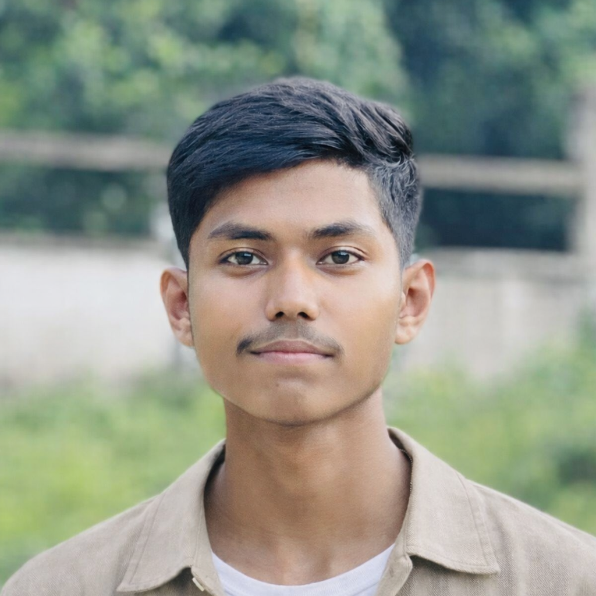

Electrical engineering
Interested in putting my academic foundation to use and learning through work.
RECENT GRADUATE · CHATTOGRAM, BANGLADESH
I’m Mostakim Hasan, an Electrical Engineering diploma graduate with an interest in how technology works—and what it can make possible.

MHI recently completed a Diploma in Electrical Engineering at Chittagong Polytechnic Institute. My studies gave me a foundation in the field, and my industrial attachment offered a first look at a professional workplace.
I’m exploring opportunities in electrical engineering while also learning about technology and software development. Outside of that, photography is an interest that helps me slow down and notice the details.
DIPLOMA · ELECTRICAL ENGINEERING
Chattogram, Bangladesh · Graduated 2026
INDUSTRIAL ATTACHMENT · 2025
Baizid Steel Industries Limited
Nasirabad, Chattogram, Bangladesh
Duties and responsibilities were not provided.
A practical set of everyday productivity tools.
Interested in putting my academic foundation to use and learning through work.
A growing interest in programming and software development.
A personal interest in observing, framing, and capturing everyday moments.
HAVE AN OPPORTUNITY OR WANT TO CONNECT?
I’m open to hearing about relevant opportunities and meeting people working in electrical engineering and technology.